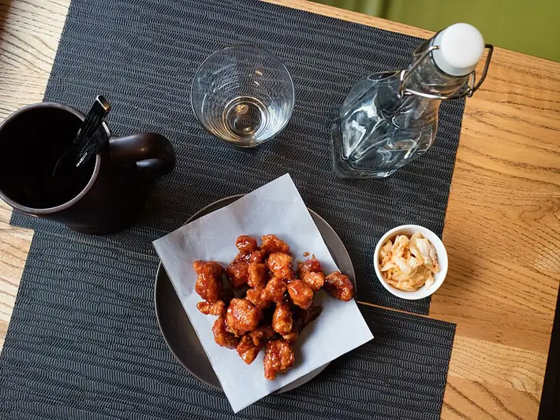

Фото: Vyacheslav Argenberg, CC BY 4.0

Курица терияки
Куриные бёдра в густом сладко-солёном соусе с имбирём
30 мин3 порц.485 ккал на порциюБ 38 · Ж 30 · У 16Азиатская кухня
Продукты на 3 порц.
- Куриные бёдра5 шт
- Соевый соус4 ст. л.
- Мёд1,5 ст. л.
- Сахар2 ч. л.
- Имбирь10 г
- Чеснок2 зуб.
- Крахмал1 ч. л.
- Вода4 ст. л.
- Растительное масло1 ст. л.
- Кунжут по желанию1 ч. л.
- Зелёный лук по желанию10 г
Как готовить
- Снимите мясо бёдер с кости, если оно на кости, и нарежьте кусками по 3-4 см.
- Смешайте соевый соус, мёд, сахар, тёртый имбирь, давленый чеснок и 2 ст. л. воды. Крахмал разведите в оставшейся воде отдельно.
- Разогрейте масло на сковороде на среднем огне, выложите курицу кожей вниз и жарьте 6-7 минут до румяной корочки.
- Переверните и жарьте ещё 5 минут. Сок при проколе должен быть прозрачным.
- Влейте соус и уваривайте 2-3 минуты, переворачивая кусочки.
- Влейте крахмал, перемешайте и прогрейте 1 минуту, пока соус не станет густым и блестящим. Посыпьте кунжутом и луком.
Совет. Соус с мёдом быстро подгорает, после него убавьте огонь. Подавайте с отварным рисом.